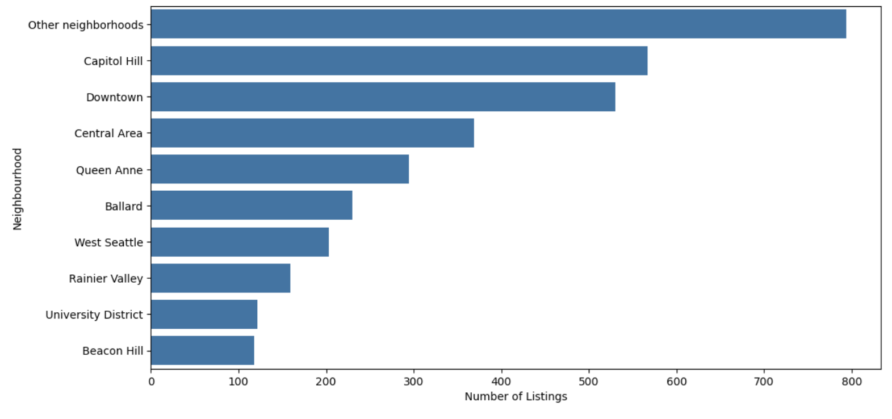
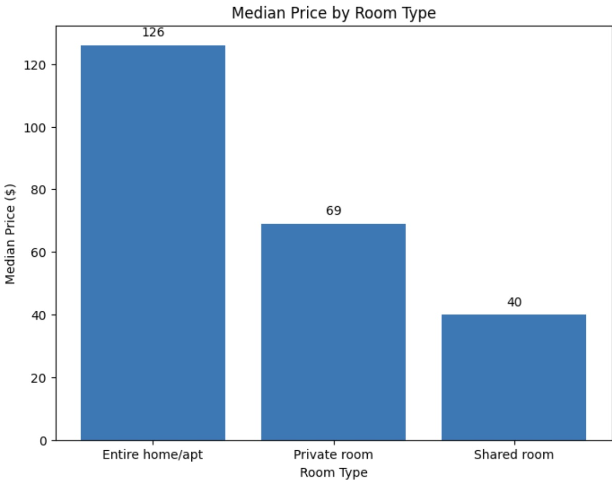

The Seattle Airbnb market offers a rich picture, reflecting the diverse needs and preferences of both travelers and locals. Through data analysis of rental listings on Airbnb, we can derive valuable insights into rental price trends, influencing factors, and customer satisfaction levels in this city. Below are the key highlights from the Seattle Airbnb data analysis.
Downtown, Queen Anne, and Capitol Hill stand out with high rental prices due to their prime locations and vibrant growth. These areas attract numerous renters because of their proximity to famous attractions and modern amenities, resulting in high demand and, consequently, higher rental rates. In contrast, suburban areas like Beacon Hill, University District, and Rainier Valley offer more budget-friendly options for those seeking lower-cost choices.
We can see that central areas have a higher number of rental listings, reflecting strong customer demand, and consequently, higher prices. This price disparity is evident in the comparative table below.
The table below shows the average rental price by area:
| Area | Average Rental Price ($) |
|---|---|
| Downtown | 139.0 |
| Magnolia | 129.0 |
| Queen Anne | 119.0 |
| Cascade | 115.0 |
| West Seattle | 110.0 |
| Capitol Hill | 104.5 |
| Central Area | 100.0 |
| Ballard | 95.0 |
| Seward Park | 93.0 |
| Interbay | 90.0 |
| University District | 85.0 |
| Rainier Valley | 80.0 |
| Northgate | 79.5 |
| Beacon Hill | 75.0 |
| Delridge | 72.0 |
| Lake City | 70.0 |
Rental prices on Airbnb reflect more than just location; they’re influenced by multiple factors. Properties with abundant amenities, spacious rooms, and modern setups generally have higher rental prices. Additionally, rental type is a significant determinant: entire apartments or homes are more expensive than shared rooms. Bed quality also plays a substantial role, with high-quality beds often associated with higher rental costs.
Entire home rentals are priced nearly twice as high as private rooms, while shared rooms offer a more budget-friendly option at just a fraction of the cost. Additional charges, such as cleaning fees, tend to be higher with more expensive rentals, making it an important consideration for renters.
In premium rental areas, you are more likely to find real beds, whereas lower-cost rentals might substitute with sofas or other less comfortable options.
For Airbnb customers, amenities are a key factor in satisfaction levels. Properties equipped with gyms, air conditioning, and elevators typically receive high ratings. Conversely, properties that allow pets or smoking tend to receive lower ratings, as these may not always meet cleanliness and comfort expectations.
The analysis of Airbnb data in Seattle provides valuable insights into the short-term rental market in the city. Central areas command higher rental prices due to convenience and demand, while factors like amenities, rental type, and bed quality all impact both rental prices and customer satisfaction. This information is useful not only for property owners but also for customers making informed rental decisions based on their needs.